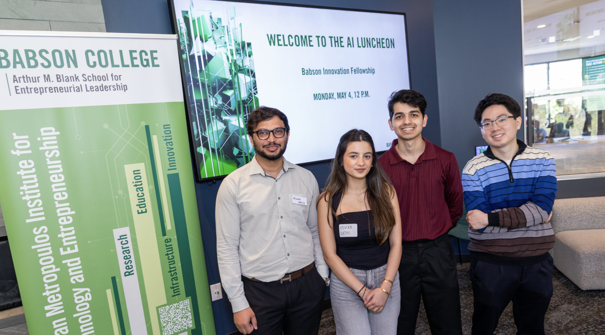

Building at the edge of AI & business.
I'm a senior at Babson College studying Business Analytics and Marketing (GPA: 3.70), with a deep interest in how AI reshapes the way brands operate and connect with people.
I hold an AI Innovation Fellowship and serve as the Dean's AI Innovation Intern in the Undergraduate School, where I've built and deployed production AI tools used by faculty and staff. I also collaborate with faculty on applied AI research and instructional design projects.
I find the overlap between data, creativity, and strategy endlessly interesting — whether that's optimizing ad campaigns, building automated workflows, or exploring what AI means for consumer behavior.

Where I've worked.
- One of 5 students selected college-wide for Babson's competitive AI Innovation Fellowship, working directly with Phil on applied AI strategy and initiatives.
- Built and deployed the AI Bulk Grading App using Python, Streamlit, GitHub, and Azure — a production tool now used live by Babson faculty to automate rubric-based evaluation and feedback at scale.
- Exploring how emerging AI tools can be integrated into business education, student workflows, and institutional operations.
- Designing and building a Student Outcomes Dashboard to monitor AI-related student metrics pulled from across the Babson student experience.
- Auditing how generative and agentic AI is currently used across undergraduate operations — FME, EPS 1000, Career Development, Student Advising, and peer tutoring — identifying gaps and recommending where AI tools could be applied responsibly.
- Developing an AI peer tutoring agent to live on Babson's SharePoint, supporting students with study skills, exam prep, note-taking, and off-hours tutoring assistance.
- Working on Career Development AI integration: aligning Roger (Babson's entrepreneurial AI agent) with uConnect's search agent to create a seamless, complementary experience for students navigating career resources.
- Collaborating with Professor Ruth on an API key management project and building a course-facing website in Lovable — integrating AI tools directly into the student learning experience.
- Mentoring incoming Presidential Scholars — Babson's most academically distinguished admits — on academics, campus life, and navigating college successfully.
- Selected as a mentor based on academic standing and leadership as a Presidential Scholar myself.
- Providing one-on-one and group tutoring in Managerial Accounting, recognized as a top performer in the course.
- Helping students build conceptual understanding and exam readiness across core accounting topics.
- Supporting event logistics and operations for the Blank School, one of Babson's flagship entrepreneurial leadership programs.
- Served as a walk-in consultant helping students with quantitative coursework — algebra, Excel modeling, hypothesis testing, regression, and finance applications.
- Selected based on high performance across Babson's core QTM courses; acted as a coach focused on building students' conceptual understanding rather than just providing answers.
- Designed social media graphics and print materials in Canva and Adobe Illustrator; helped boost auction attendance by 15%.
- Streamlined CRM updates and client tracking in Excel, cutting weekly data entry from 2 hours to 30 minutes.
- Revitalized underperforming Meta Ads via A/B testing — achieved 25% improvement in ad relevance scores and 10% reduction in cost per acquisition.
- Produced email templates that drove a 20% lift in open rates through consistent brand messaging.
- Analyzed operational data in Minitab and R Studio, surfacing a 15% cost savings recommendation.
- Mapped client communication workflows in Visio, reducing client onboarding time by two days.
- Delivered a financial presentation on mutual funds to senior leadership, earning direct commendation.
- Self-learned financial concepts with no prior background; completed assigned tasks 25% faster than other interns.
Things I've built.
Built as one of 5 selected AI Innovation Fellows. A production-grade grading automation tool deployed for use by Babson faculty — accepts batch submissions, applies rubric-based AI evaluation, and returns structured feedback at scale.
Designing an AI tutoring agent for Babson's SharePoint, helping students with study skills, exam prep, note-taking, and off-hours support — scoped, prototyped, and iterated with faculty project leads.
Revitalized underperforming ad campaigns through systematic A/B testing of copy and visuals. Improved ad relevance scores by 25% and reduced cost per acquisition by 10%.
Used Minitab and R Studio to identify operational bottlenecks and model inefficiencies across client workflows, delivering a 15% cost-savings recommendation to leadership.
What I work with.
Data & Analytics
Python, SQL, Tableau, Power BI, Excel (Advanced), Minitab, R Studio
AI Tools
ChatGPT, Claude, Gemini, Copilot, Replit, Prompt Engineering, AI-assisted analysis
Design
Canva, Adobe Illustrator, Photoshop, InDesign
Analytics Techniques
Business Analytics, Financial Modeling, A/B Testing
Dev & Deployment
Streamlit, GitHub, Azure, Lovable, Python scripting, workflow automation
Languages
English (fluent), Hindi (native), Spanish (conversational)
What I'm into.
25+ countries & counting.
I spent a semester abroad in Madrid, which cemented a love for exploring new cultures, languages, and perspectives. Traveling has shaped how I think about global markets and consumer behavior.
Pilates & weightlifting.
Fitness is a non-negotiable part of my routine. I split my time between reformer Pilates and the weight room — both demand the same discipline and consistency I bring to my work.
Let's connect.
Open to marketing internships, AI project collaborations, and conversations about the future of AI in business.